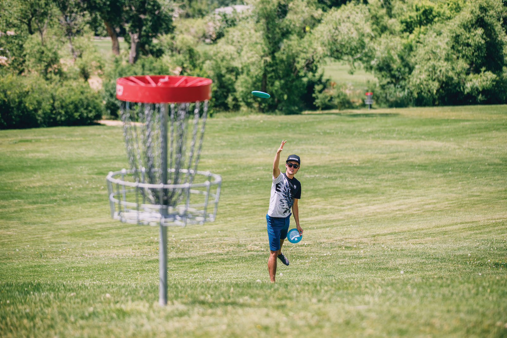
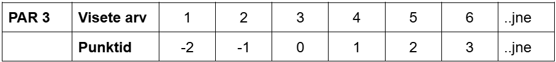

TERE TULEMAST DISCGOLFI!
Kettagolf ehk discgolf on viimasel aastakümnel tohutult populaarseks kasvanud spordiala, mis põhineb palligolfi reeglitel, kuid golfikepi, palli ja augu asemel on mänguvahenditeks ketas ja korv.
Golfireeglitest tulenevalt on mängu eesmärk visata ketas võimalikult väheste visetega korvi. Esimene vise tehakse selleks ettenähtud kohast ehk tiialalt ja iga järgmine viske sealt, kus eelmisest viskest ketas maandus, ja nii, kuni ketas on korvis.
MIKS MÄNGIDA?
Põhjuseid, miks discgolf on äge leidub nii palju, et küsimusele “Miks mängida?” on ainuke õige vastus “Miks mitte?”
Esiteks, discgolf on ideaalne ajaviide looduses; Eestis leidub sadu erinevaid radu, millest igaüks on endale unikaalses looduseskaunis kohas.
Teiseks ei ole discgolfil erilisi füüsilisi eeldusi, seega ei pea olema tippsportlane, et mängu nautida, mängu saab nautida igaüks! Eriti kasulik on see neile, kes pole varem spordiga tegelenud ja soovivad tekitada head liikumisharjumust; see on imeline viis, kuidas enda päevased sammud täis saada!
Kolmandaks, discgolf, erinevalt palligolfist, on väga odav spordiala; paarikümne euro eest on võimalik osta paar ketast, mis on algajale täiesti piisav vähemalt mitmeks kuuks. Isegi maailma parimad mängijad kasutavad neid samu kettaid, mis igas korralikus spordipoes paarikümne euro eest müügil on.
PUNKTISÜSTEEM
Punktisüsteem on golfisõpradele tuttav par-süsteem. Igal korvil on määratud ettenähtud visete arv ehk par (tavaliselt 3, vahel 4, harva 5 viset). Punkte saab vastavalt sellele, kui palju erineb mängija visete arv korvi par-ist. Iga viske kohta, mis on üle par-i saab mängija +1 punkti, iga viske kohta alla par-i -1 punkti, kui visete arv ongi par, saab mängija 0 punkti.
Punktisusteemi spikker par 3 rajaga on jargmises tabelis.
Harilikult on ühel discgolfi rajal 18 korvi; mängu võidab see, kellel on peale 18 korvi mängimist kõige vähem punkte.